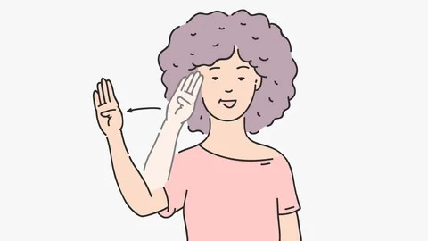
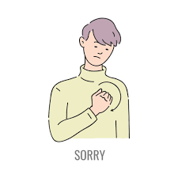
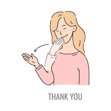
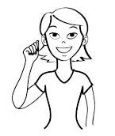
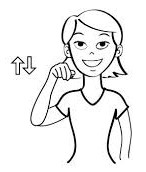

Learn the Sign Language Alphabet
Here are the signs for each letter of the alphabet in Indian Sign Language (ISL). Click on the images to view the details and note for each letter.

Hello
HelloDescription: The wave can also be more like a simple greeting gesture where the fingers are extended and the hand is waved slightly, similar to how you would wave “hello” in many cultures, just with a more subtle motion.

Sorry
Description: This circular motion on the chest can be done with one fist, or in some cases, a more open hand, but it's usually done in a polite or apologetic way.

Thankyou
Description:You can also extend your fingers from your chin outward, with the fingers lightly touching the chin at first, making a small gesture outward, as if blowing a kiss without the lips part.
.png)
Smile
Description:Hold your hands up to your face with your palms facing upwards curve your fingers upwards,like you're smiling,move your fingers upwards and outwards, as if you're stretching your smile.

Yes
Description:Hold your dominant hand up with your palm facing outwards,move your hand up and down a few times, keeping your wrist straight.

No
Description: Hold your dominant hand up with your palm facing outwards,move your hand from side to side a few times, keeping your wrist straight.